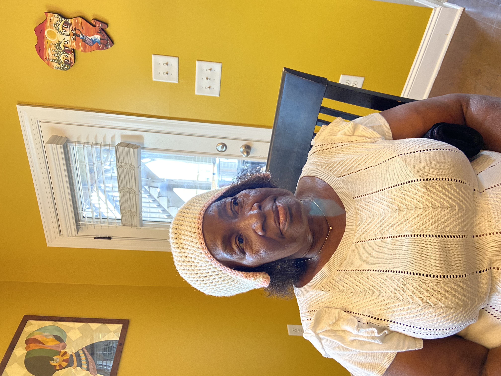
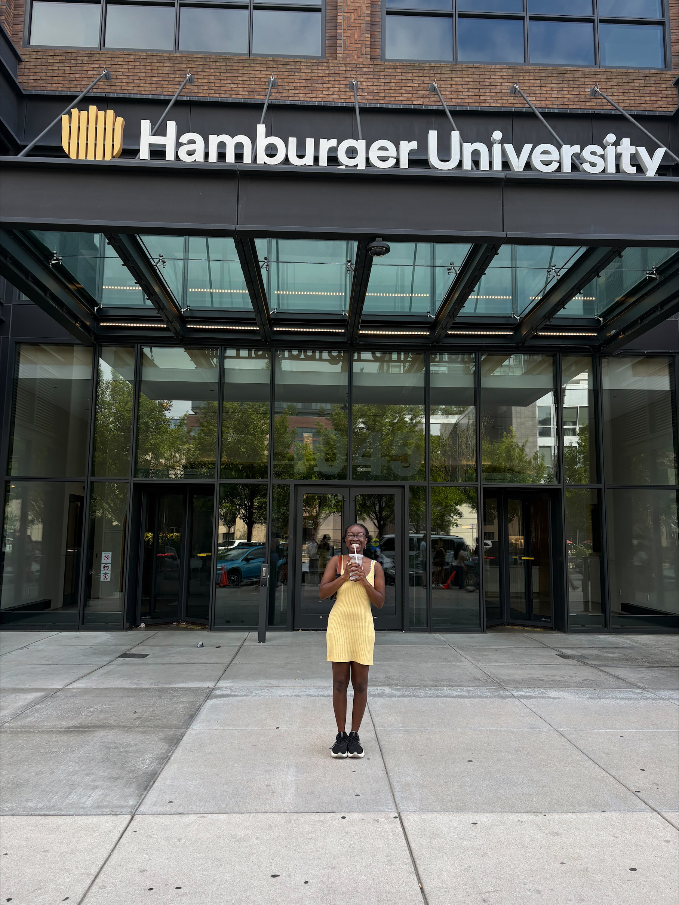
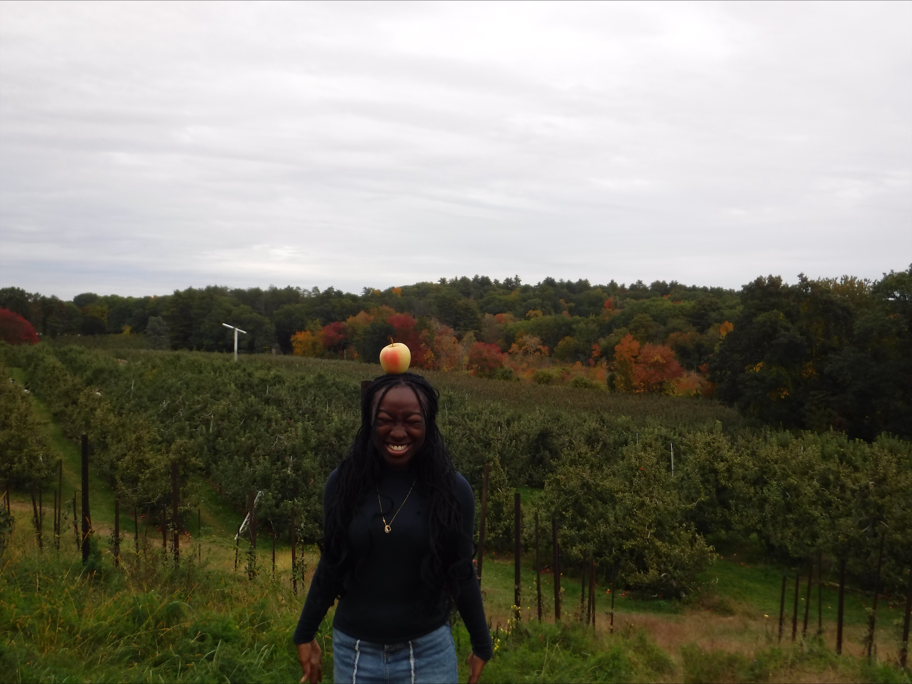
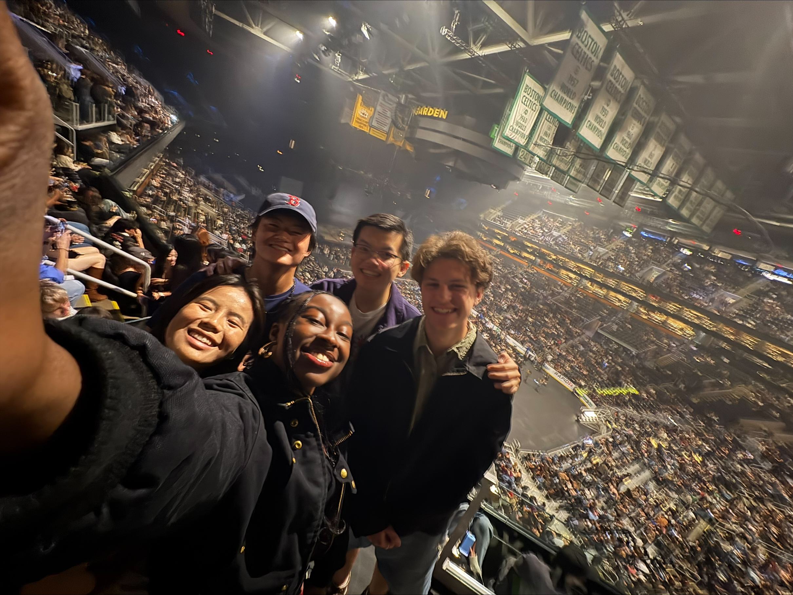
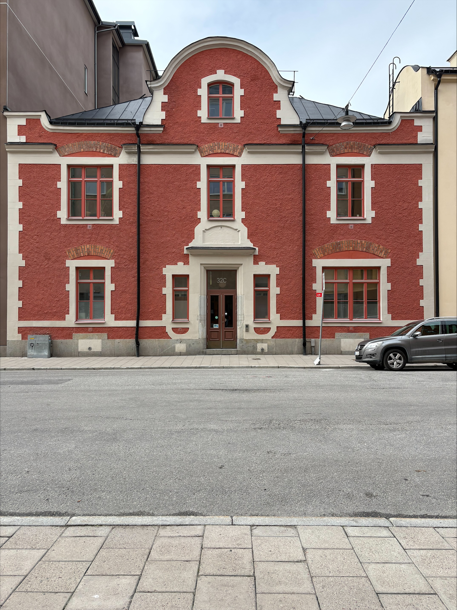
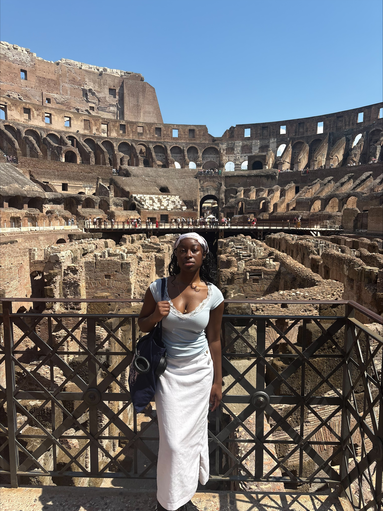
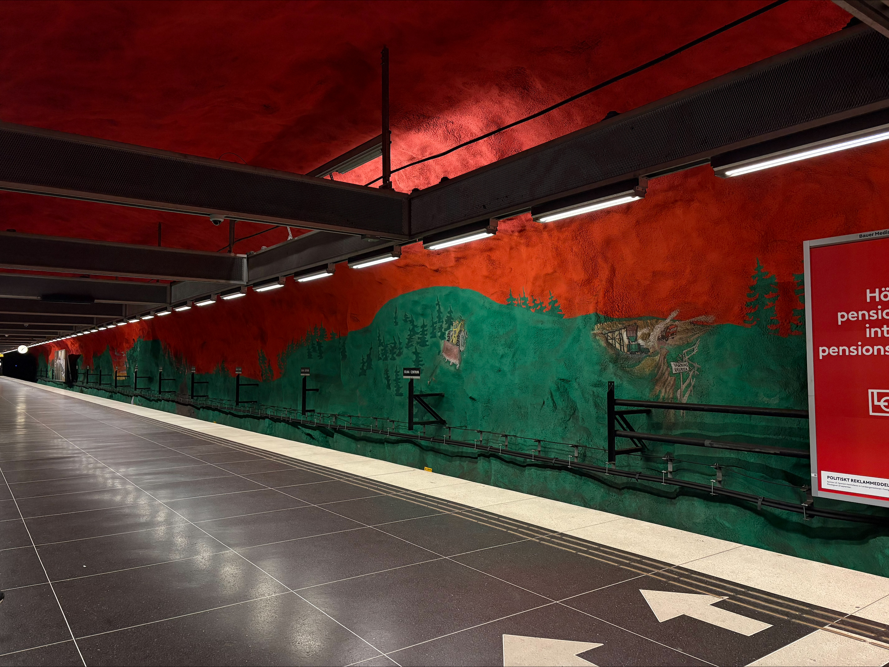
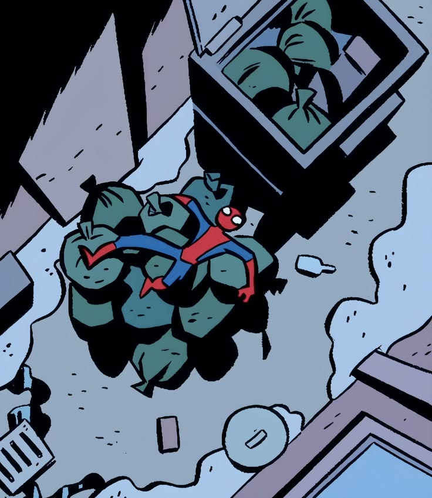

Outside of classes and the lab, I love getting outdoors on hiking trails, traveling back to Ghana, and making things with my hands, including crocheting a hat for my grandma (ironic, I know). Whether I’m tracking down new foods to try, going apple picking in the fall, or singing along at concerts, I’m happiest when I’m exploring somewhere new with good company.







From wandering through Stockholm and standing outside the Colosseum in Italy to riding public transit every chance I get, I love learning a city by train and on foot, and I will always make room for anything Spider-Man.
